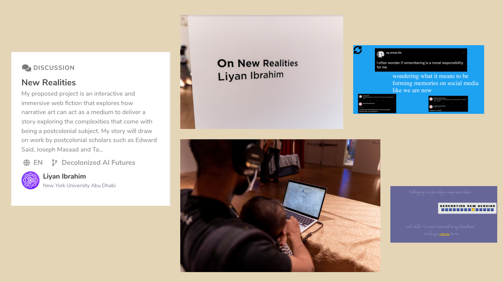

On New Realities...
Postcolonial Identities, Digital Storytelling
On New Realities is my capstone project that is an interactive storytelling project exploring the complexities of being a postcolonial subject online. It is an independent project supervised by Professor Heather Dewey-Hagborg, a transdisciplinary artist and faculty member from the Interactive Media department. I presented the project at the Mozilla Festival in 2022 as part of their Decolonizing AI space. It was also exhibited in the New York University Abu Dhabi end of year capstone showcase. On New Realities uses objects and narrative art to tackle the trajectory and experience of people with hybrid identities through the following lenses: 1. Historical perspective - how historical notions of our identities affect how we view ourselves. 2. Postcolonial subjectivity online - Identity formation on the internet when we are unevenly connected globally and disconnected locally. 3. Futuristic perspectives - reimagining a future of belonging.
Through an interactive and immersive web fiction, the user is immersed in an interactive experience, carefully crafted to include the different lenses mentioned above. One can’t explore the ‘postcolonial’ without properly defining and understanding its’ historical grounding and analysis. The experience immerses the user in a house hunt with objects carrying narratives that are based on historical understanding and conceptualizing of the ‘postcolonial’. To me, and for this project, this means having a specific understanding of the ‘postcolonial’ historically, digitally, and in its manifestation through fiction.
After exploring the project, download the project's booklet to learn more!